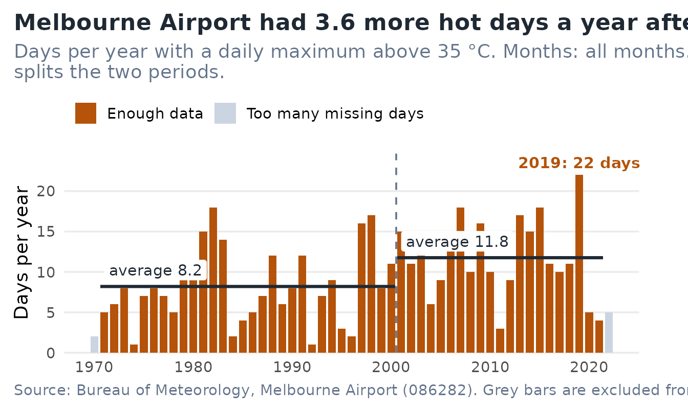
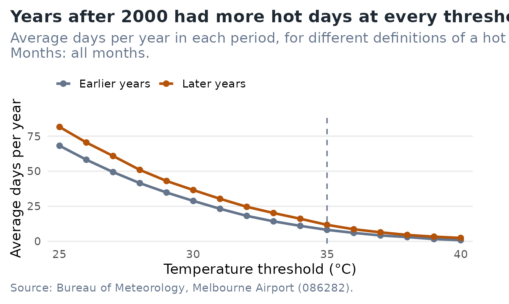
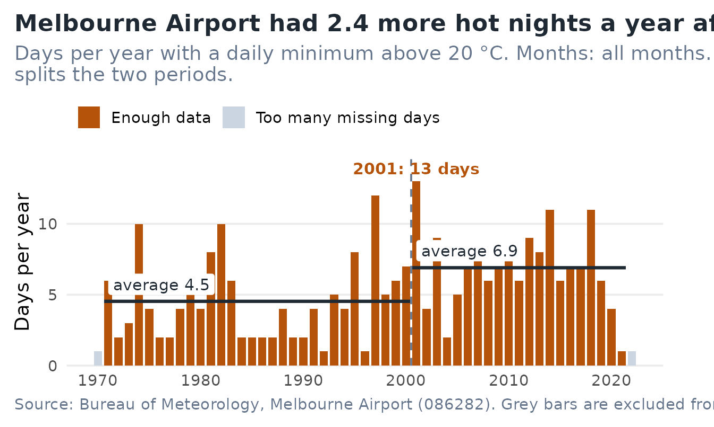

A council or emergency-planning officer has to say, in one sentence,
whether hot weather is becoming more frequent. melbheat
answers that for Melbourne Airport in three steps, and this article
walks through them:
- count the days each year above a temperature you choose;
- compare an earlier period with a later one, and say how sure we can be;
- check whether the answer depends on what you count as “hot”.
By the end you will be able to reproduce every number in the app with a few lines of code, and know how to read it and where it stops being reliable.
Install and launch
# install.packages("pak")
pak::pak("ETC5523-2026/etc5523-assignment-4-tngu0386-oss")run_app() opens the Shiny app in your browser. The rest
of this article uses the same functions the app calls, so you can work
in code or in the app and get identical results.
The data
melb_temp has one row per calendar day, from 1 January
1970 to 26 July 2022, at the Bureau of Meteorology station 086282
(Melbourne Airport). Days with no usable reading are kept as
NA instead of being dropped, so that a gap is visible
rather than silent.
library(melbheat)
melb_temp[melb_temp$date >= "2019-01-24" & melb_temp$date <= "2019-01-26", ]
#> date year month tmax tmax_quality tmin tmin_quality
#> 17921 2019-01-24 2019 1 41.9 N 17.4 N
#> 17922 2019-01-25 2019 1 46.0 N 21.0 N
#> 17923 2019-01-26 2019 1 28.1 N 17.3 N| Field | Meaning |
|---|---|
date, year,
month
|
Calendar date and its year and month |
tmax, tmin
|
Daily maximum and minimum temperature (°C) |
tmax_quality,
tmin_quality
|
The Bureau’s quality flag for each reading |
The raw files and the script that builds melb_temp are
in data-raw/ in the source repository, so the preparation
can be re-run from scratch.
Step 1: count hot days each year
annual_exceedances() counts the days in each year with a
daily maximum above a threshold. The threshold has no default on
purpose: what counts as hot is your decision, and the function asks for
it.
ex <- annual_exceedances(threshold = 35)
tail(ex, 4)
#> year n_days n_observed n_exceed coverage prop_exceed reliable
#> 50 2019 365 365 22 1.0000000 0.06027397 TRUE
#> 51 2020 366 366 5 1.0000000 0.01366120 TRUE
#> 52 2021 365 365 4 1.0000000 0.01095890 TRUE
#> 53 2022 365 201 5 0.5506849 0.02487562 FALSELook at the last row. 2022 has data for only 201 of 365 days, because
the record stops in July, so reliable is
FALSE. A year is only trusted when at least 80% of its days
were observed (change this with min_coverage). Without that
rule a short year would look like a cool one.
plot_exceedances() draws the counts. Add
split_year to see the two periods being compared.
plot_exceedances(ex, split_year = 2000)
The title is the finding, the hottest year is the only bar that is labelled, and grey bars are the years left out of the averages.
Step 2: compare two periods and say how sure we are
summarise_periods() averages the reliable years either
side of a year you choose, and describe_periods() turns the
table into sentences.
periods <- summarise_periods(ex, split_year = 2000)
periods[, c("period", "n_years", "mean_exceed", "sd_exceed")]
#> period n_years mean_exceed sd_exceed
#> 1 2000 or earlier 30 8.2000 4.693356
#> 2 after 2000 21 11.7619 5.009039
said <- describe_periods(periods, variable = "tmax", threshold = 35)
said$headline
#> [1] "In 2001–2021 the airport averaged 11.8 days a year with a daily maximum above 35 °C, against 8.2 in 1971–2000. That is 3.6 more hot days a year."
said$how_sure
#> [1] "The gap stands out from year-to-year noise: a rough 95% range for the difference is +0.8 to +6.3 days a year. This treats years as independent, so use it as a guide, not a formal test."The “rough 95% range” is the gap between the two averages plus or minus two standard errors. It treats each year as independent, which neighbouring hot years are not quite, so read it as a guide to whether the gap is bigger than ordinary year-to-year variation, not as a formal test.
When there is nothing to compare, the function says so instead of reporting a gap of zero. Here, a very high threshold in a single month leaves no hot days at all:
rare <- annual_exceedances(threshold = 42, months = 7)
describe_periods(summarise_periods(rare, split_year = 2000),
variable = "tmax", threshold = 42)$headline
#> [1] "No year in either period had a daily maximum above 42 °C."Step 3: does the answer depend on the threshold?
A conclusion that only holds at 35 °C would be fragile.
threshold_sensitivity() repeats the comparison across a
range of thresholds.
sens <- threshold_sensitivity(thresholds = c(30, 33, 35, 38, 40))
sens[, c("threshold", "mean_before", "mean_after", "difference")]
#> threshold mean_before mean_after difference
#> 1 30 28.8333333 36.571429 7.738095
#> 2 33 14.2666667 20.190476 5.923810
#> 3 35 8.2000000 11.761905 3.561905
#> 4 38 3.0333333 4.571429 1.538095
#> 5 40 0.8333333 2.428571 1.595238
plot_sensitivity(threshold_sensitivity(), highlight = 35)
The later period is higher at every threshold. The gap in days is
bigger at low thresholds simply because there are more such days. The
ratio column puts the thresholds on a common footing: later
years had roughly 1.2 to 1.5 times as many hot days at most thresholds,
and a larger multiple for the rarest days, where the counts are small
and noisier.
Hot nights
The same functions work for the daily minimum. A hot night is often defined as a minimum above 20 °C.
nights <- annual_exceedances(variable = "tmin", threshold = 20)
plot_exceedances(nights, split_year = 2000)
Use the app
Everything above is in the app, with the arithmetic hidden behind controls.
| Control | What it does |
|---|---|
| What are you counting? | Hot days (daily maximum) or hot nights (daily minimum) |
| A day counts if it is above | The threshold, in °C |
| Months to include | Restrict to a season, for example December to February |
| Compare years up to … with years after | The year that splits the two periods |
| Minimum share of days observed | Under “Show advanced setting”; how complete a year must be to be used |
The See the trend tab shows the finding first (“What this shows” and “How sure are we?”), then the chart, then the period table. Does the threshold matter? is Step 3. Guide explains each field. Chart and table can be downloaded. If your choices leave nothing to count, for example no months ticked, the app tells you what to change instead of showing an empty chart.
What this can and cannot tell you
- It is one weather station. Other parts of Melbourne can differ.
- Readings are as recorded. They are not adjusted for changes in instruments or surroundings.
- The comparison shows that hot days were more frequent later. It does not say why.
- The result depends on the split year you choose, so try several.
- The range from
describe_periods()is a rough guide, not a hypothesis test.
Data: Australian Bureau of Meteorology, Climate Data Online. Copyright Commonwealth of Australia, Bureau of Meteorology.